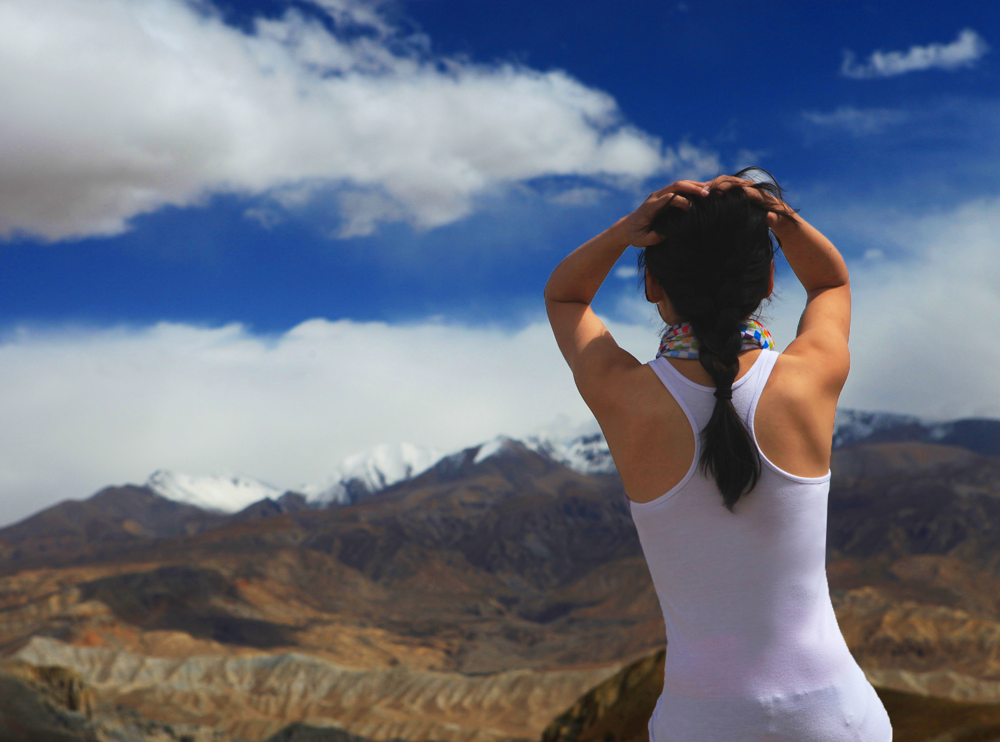
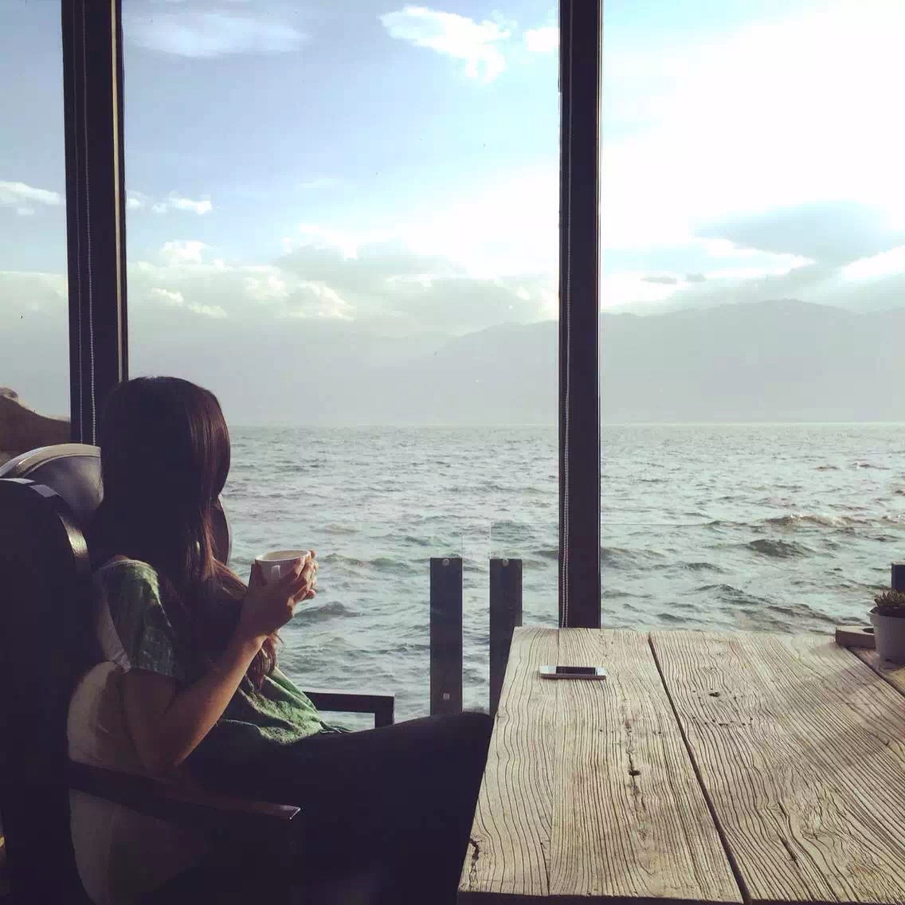
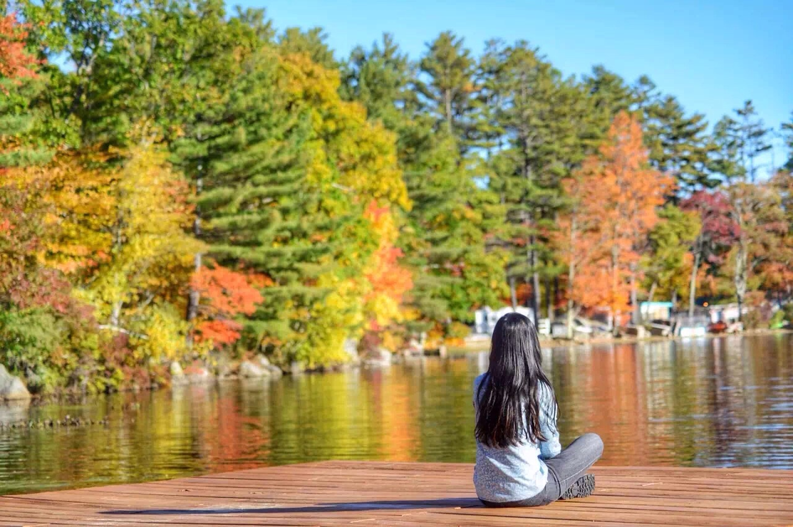
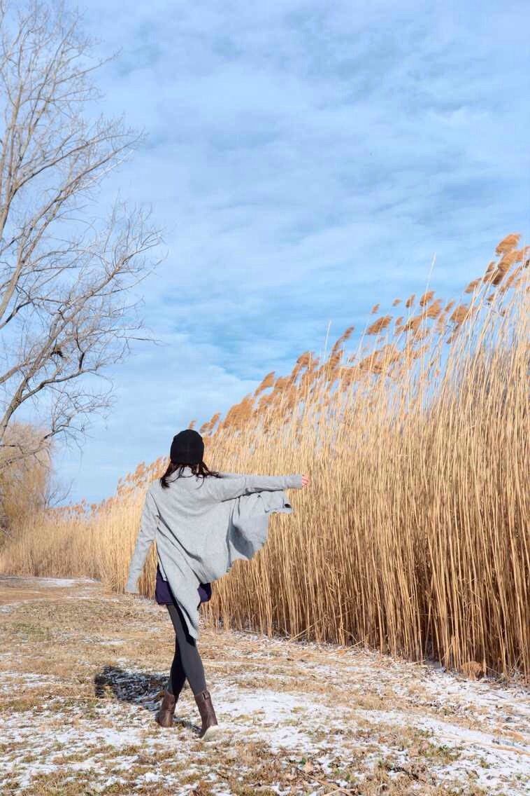
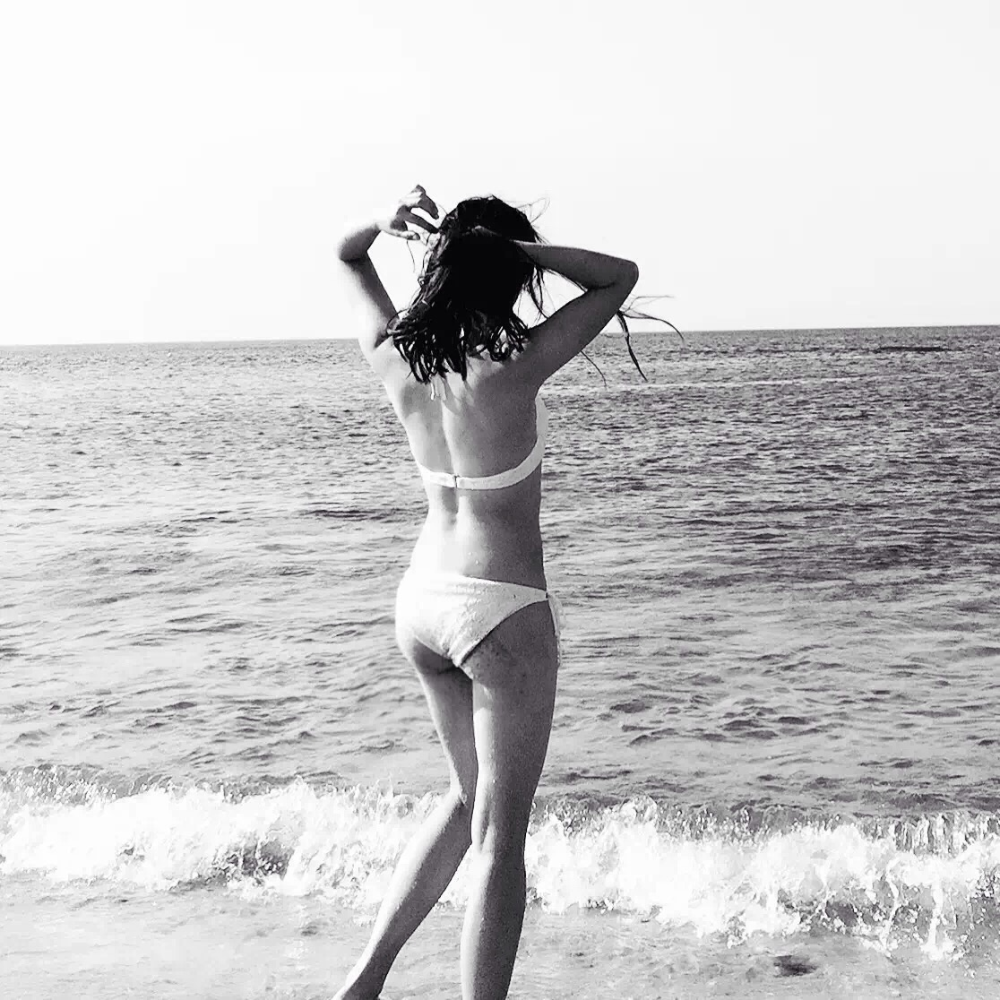

正文:
小声说：不太会呢。
在周作人《雨天的书》里有一个故事：百余年前，有一位精通茶道的艺术家，在一次旅行中，每到驿站必取出茶具，悠然地点茶啜饮。
有人问他，旅行中何必如此？
他答得妙：“旅行难道不是生活吗？”
旅行难道不是生活吗？旅行只是生活的一个片段，而非生活的对立面。
我也很喜欢旅行，曾独自或结伴走过大半个中国和世界上的几十个国家，身边的朋友们都是旅行圈的行家，为旅行杂志撰稿，出版游记，上旅游节目、编写LP，去世界的犄角旮旯，只为更新奇的内容，比一般的旅行爱好者花费了更多生命在旅途中。你说旅途爽不爽，当然爽，但对人的本质产生了多大的改变？大家都存疑，因为即便不旅行，他们依然是那样的人，或有趣、或鸡贼、或浪荡、或自私、或无畏。
大多数人的人生，不过是先在童年的时候拥有了一个自我的内核，然后往后的人生经历，无非是一层层按着形状的包浆，旅行便是这包浆中的一层，也许看上去更光滑圆融，但核一直在那里。仅有极少数人，能对自己从前的人生毫无眷恋，拥有打碎重来的决绝之心。我相信这样的人，即便从不旅行，依然会在别的机缘下自我进化。
普通上班族学生就算一年旅行累计60天，那余下的300天，难道全都是虚度吗？难道一粥一饭就真的不如旅行改变你多吗？难道旅行和生活本身，不能本质上就是同一件事吗？在无比漫长的人生中，如果一年几次十天半月的旅行真的能让你从一个各种缺陷的人变成更完美的人，那还要宗教修行和心理学、教育学干嘛，全都出门晃上一个星期，回来病全好了，大和谐了。
一个生活中买葱都要砍价的人，不可能在旅行后突然拥有挥金如土的豪爽气，一个习惯每日把计划表精确到分的人，不可能不带任何攻略不查任何资料来段闭眼撞大彩的旅行，一个生活中极端追求品质的人，也不可能看上0元购物团的免费旅游，一个在生活中戾气重的人，出了几次国门突然就找到了inner peace？
大家依然背负着自己的业力和宿世习气东奔西走，囚犯逃到世界尽头也会随身携带他的小监狱，把生活搞到一团糟的人在哪里都是颠沛流离。
每到一地，安放好你身上的重壳，嘈杂仿佛远去，得以暂时喘息，然后呢？如果在旅行地呆上一年，你猜从前遇到的难题会不会卷土重来？从旅行地回来的兴奋与顿悟，不过是生活的又一针鸡血。药性过了，你依然是几十年前的那个你，继承和演化着你父母赐予你的优良或缺憾的秉性。
文艺作品以凝固片段来抵抗无常，我认为题主列举的作家名言并不能成为旅行改变人生的依据。艾瑞克·温纳不过是 New York Times的最畅销书作家，如果你翻翻他的社交网络，会发现许多类似“找到你的幸福之地”“你要打破的5条旅行规则”“如何得到你值得的天赋”，是不是有美国鸡汤香气扑面？喔，他写美国的时候，写的是“幸福就是回家”，那个幸福角落是回家哟！
同理，写游记的同学最爱念叨“有些事你现在不做就永远也不会做了”“不去会死”“三步两步就是天堂”“在旅行中遇见真正的自己”煽动读者……有时我们应分清“想要”和“需要”的区别。如果旅行是你的需要，像吃饭、睡觉一样重要，那么就带上你的心和钱去享受旅行，而不要给它赋予过重的期望与意义。如果你想通过旅行去解决生活里的难题，去寻找所谓的安全感、梦想、勇气，甚至用它来逃避现实生活，那么你一定会失望，它就是生活本身，那扇没有推开的门终究还是会矗立在你面前。
值得庆幸的是，喜欢旅行的人，愿意接纳陌生事物的人，大都对这世界抱有一份热爱之情，大都有稍微好的经济基础，有趋向完美的内心动力。也许改变你的并不是几次旅行，而是你幸而拥有一颗愿意对世界敞开的柔软的心。
来，配上我的励志图喝鸡汤，最好的时光在路上，三步两步就是天堂，再不远行就老了，灵魂和身体总要有一个在路上，我把背影留给世界，孤独留给我自己哈哈哈哈哈是不是更加香浓了！




